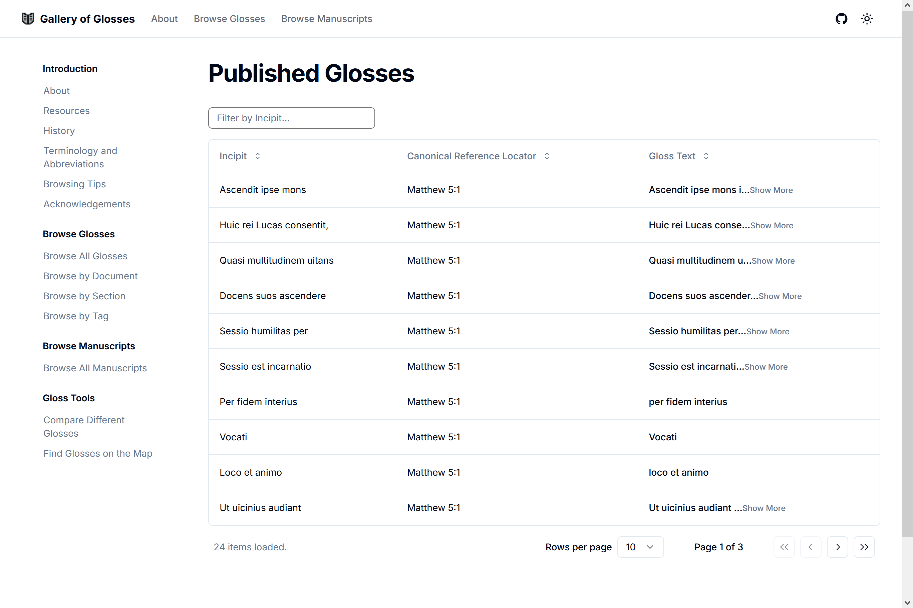
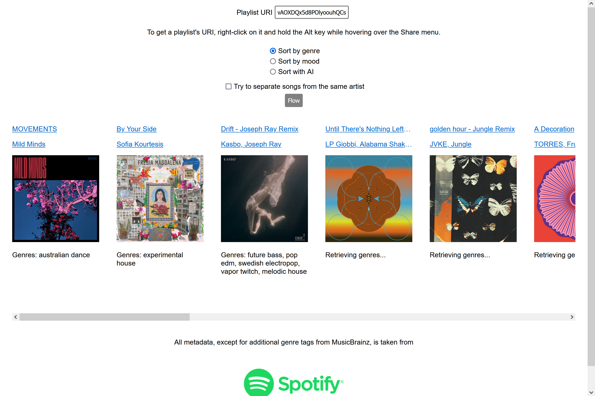
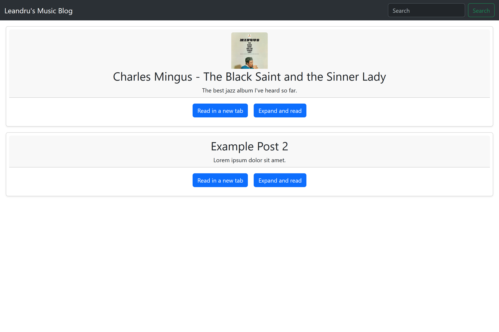

projects I have worked on
TPEN Services
Node.js back end for TPEN project helping organize data for humanities researchers. Contributed as part of simulated Agile app development environment for senior capstone project. Contributions added include added API endpoints and comprehensive unit testing.
Gallery of Glosses
Front end Next.js TypeScript web app for presenting research data to theological scholars.
Pi4Micronaut
Java library with Micronaut framework to facilitate IoT interaction with Raspberry Pis. I am contributing as part of simulated Agile app development environment for senior capstone project. I am helping develop the project by adding support for numerous GPIO hardware components, adding unit testing, writing documentation, and performing hardware testing.
things I have made
Flow for Spotify
A tool to reorder a diverse playlist for the smoothest transition between each genre and style. Find your playlist's perfect flow.
Music Blog
Music blog as the final project for CSCI 4360 Web Technologies.